TI301 – Algorithms and Data Structures 2 · Computer Science and Mathematics Project
The Forest and the Light Part 1
This project is written jointly for the SDD2 and Probability modules.
Original idea, design, implementation: Nicolas FLASQUE Validation for the probability module: Federico ZALAMEA, Brice JUANICO Project website and animations: Nicolas FLASQUE and Claude Code Pro – Opus 5.5 model
Young trees are planted and left to grow, season after season… To grow, a tree needs light; but trees cast shade on one another. A tree that catches the light grows faster and shades the other trees. Trees that grow more slowly get less light and stop growing.
A tree, in the botanical sense, is also a tree in the computer science sense: the first branch comes out of the ground, then new branches grow from its tip, and so on.
The goal of this project is to simulate the growth of whole forests, to represent each tree by a tree structure in C, to measure its characteristics and to visualise them.
The tools and results you produce will then be used in the mathematics project.
This document only presents the notions needed for the computer science part.
Project organisation
Part 1 Grow a single tree at random, in full light, measure it and save it to a file;
Part 2 Grow a whole forest, in which trees shade one another;
Part 3 Simulate thousands of forests, analyse and visualise the results.
1What is a tree?
Two kinds of trees must be clearly distinguished in this project
the trees that “grow” in the simulation: the branching trees;
the 3-ary trees that represent them: the tree data structures.
The branches of a branching tree
A branching tree is made of… branches! Each branch is a short segment that starts from the tip of its parent branch. The first branch, called the trunk, starts from the ground.
A branching tree is seen in 2D: the \(x\) axis gives the horizontal direction (from left to right – we will need it in the next parts), and the \(y\) axis measures the altitude above the ground.
For each branch, we store:
the position of its tip: \(x\) and \(y\);
its length: a real number between 0.7 and 1.3;
its direction: an angle in degrees, 0 for a vertical branch, positive if it leans to the right, negative if it leans to the left;
the season in which it appeared (0 for the trunk);
its state:
bud its tip carries a bud, which may still give birth to new branches;
wood new branches have already grown from its tip.
the computation of the \((x,y)\) positions of the branches is provided (function growBranch): the tip of a branch is computed from the tip of its parent, its direction and its length (see the example below).
The tree data structure
the trunk is the root of the tree;
the children of a branch are the branches that grew from its tip; a branch has at most 3 children;
the leaves of the tree (the nodes without children) are exactly the branches that carry a bud.
The generation of a node (branch) is its distance = depth from the trunk in the tree: the trunk is generation 0, its children generation 1, their children generation 2, and so on.
The height of the tree data structure is the largest generation of its branches. Do not confuse it with the altitude of the branches, which is measured in units of length.
Example
Here is a tree of 10 branches that has grown for 4 seasons. The tip of the trunk is at (\(x\) = 4.5, \(y\) = 1.0). Branches are numbered in the order in which they appeared:
Branch
Season
Parent
Direction
Length
Tip (x, y)
Generation
State
0
0
–
0
–
(4.50, 1.00)
0
wood
1
1
0
0
1.0
(4.50, 2.00)
1
wood
2
1
0
−45
0.8
(3.93, 1.57)
1
wood
3
2
1
5
1.0
(4.59, 3.00)
2
wood
4
2
1
50
0.8
(5.11, 2.51)
2
bud
5
2
1
−40
0.7
(4.05, 2.54)
2
bud
6
3
3
0
1.0
(4.59, 4.00)
3
wood
7
3
2
−50
0.6
(3.47, 1.95)
2
bud
8
4
6
−5
0.9
(4.51, 4.89)
4
bud
9
4
6
45
0.7
(5.08, 4.49)
4
bud
For example, branch 2 starts from the tip of branch 0, with a direction of −45° and a length of 0.8: \(x = 4.5 + 0.8 \times \sin(-45^\circ) \approx 3.93\) and \(y = 1.0 + 0.8 \times \cos(-45^\circ) \approx 1.57\).

Growth of the example tree (one season = 0.6 seconds)
Another example:

Growth of a tree of height 23 (290 branches, 23 seasons, one season = 0.4 seconds)
Link between the tree data structure and the tree that grows
Each node of the tree data structure is a branch; a link of the tree data structure is not a branch, it only shows that one branch grew from the tip of another. Hover over a node or a branch to see its characteristics.
Tree data structure
root (the trunk) at the top
Tree data structure
root (the trunk) at the bottom
Branching tree
side view, trunk at the bottom
node = wood branchnode = branch carrying a budlink “grew from the tip of”a branch
2The environment
You will be given a code base through a GITHUB repository, whose URL will be given to you during the first project session.
The provided code uses French names
The names of the types, fields, files and some parameters in the provided code are in French. You will keep them as they are. The main words:
French
English
French
English
arbre
tree
saison
season
rameau, rameaux
branch, branches
graine
seed
pied
trunk (the root)
longueur
length
bourgeon, BOURGEON
bud
etat
state
bois, BOIS
wood
gen, generation
generation
fils, p_fils, nb_fils
children, array of children, number of children
nb_rameaux
number of branches
croissance
growth
dessin
drawing
alea
random
etape
step
nom_fichier
file name
duree_saison
duration of a season
exemple
example
petit, moyen, grand
small, medium, large
Step 1Getting started with the provided code
Goal
Use functions that are already written, without modifying them: read a tree described in a file, display it, draw it and animate its growth. The program for this step is src/main_etape1.c (CMake target etape_1): read it, it shows you how these functions are called.
Available functions
Function
Declared in
Role
t_arbre readTree(const char *nom_fichier)
arbres_utils.h
builds the tree described in a text file
void displayTree(t_arbre a)
arbres_utils.h
prints all the branches of the tree in the console, by number
writes an HTML page showing the tree in three ways: tree data structure with the root at the top, tree data structure with the root at the bottom, branching tree. Hovering over a branch displays its information. Only the first 15 seasons are drawn.
To do
Run the etape_1 target.
In main_etape1.c, choose a file data/xxxx.txt among exemple1.txt, arbre_petit.txt, arbre_moyen.txt and arbre_grand.txt, then run again.
Look at the files produced in the output directory by opening them in a web browser: the .svg drawing, the .svg animation (reload the page, F5, to watch it again) and the three .html views.
Step 1 validation
With exemple1.txt, the program prints (the output of the provided code is in French: rameau = branch, fils = children):
These structures, declared in arbre.h, will be reused as they are in parts 2 and 3.
The branch
Each branch is a node of the tree. Since a branch has at most 3 children (NB_FILS_MAX), its children are stored in a dynamic array of pointers, p_fils, allocated to the exact size of its number of children (p_fils is NULL for a branch without children).
typedef enum e_type {
BOURGEON = 0, // bud: branch without children, which can still grow
BOIS = 1 // wood: branch that has produced at least one child
} t_type;
#define NB_FILS_MAX 3
typedef struct s_rameau {
int num; // branch number (order of appearance, 0 for the trunk)
float longueur; // length of the branch
float x; // tip of the branch: horizontal position
float y; // tip of the branch: altitude
float dir; // direction in degrees (0 = vertical, positive to the right)
int saison; // season of appearance
int gen; // generation (depth in the tree, 0 for the trunk)
t_type etat; // state: BOURGEON or BOIS
unsigned char nb_fils; // number of children, from 0 to NB_FILS_MAX
struct s_rameau **p_fils; // branches grown from its tip: dynamic array of nb_fils cells
} t_rameau;
The tree
A tree is simply designated by its trunk; we also store its number of branches and its seed, which determines the random draws of its growth.
typedef struct {
t_rameau *pied; // trunk: first branch, the root of the tree
int nb_rameaux; // number of branches of the tree
int seed; // random seed of the tree
} t_arbre;
The arbre.h / arbre.c module
This module is entirely provided: you have no function to write in it, but you will use its functions.
Provided functions
Function
Declared in
Role
t_rameau *createBranch(float x, float y, float dir, float longueur, int saison, int gen, int num)
arbre.h
creates with malloc a branch with tip (x, y), direction dir, length longueur, appeared in season saison, of generation gen and number num. The branch is a bud, without children (p_fils is NULL). The program stops if the allocation fails.
t_arbre createTree(float x, float y, int seed)
arbre.h
creates a tree containing only its trunk: a vertical bud with number 0, generation 0, appeared in season 0, with tip (x, y). The trunk starts from the ground, at point (x, 0): its length is therefore y. The tree has 1 branch. The seed seed is stored in the tree, and the random number generator is initialised with it (randomInit(seed)).
creates a new branch that grows from the tip of parent, with direction dir and length longueur, appeared in season saison. It computes its tip, its generation (parent->gen + 1) and its number (a->nb_rameaux, which increases by 1), and sets parent to the BOIS (wood) state.
Note: growBranch calls createBranch
Warning: growBranch does not store the new branch in the p_fils array of the parent. It is up to the calling function to allocate this array (it knows the number of children), to put the branch in it and to update parent->nb_fils.
The growth rules
In this part, the tree grows alone, with nothing to shade it.
In each season, each bud of the branching tree (= leaf of the tree data structure) may grow, according to the following rules:
it grows in 95% of cases; otherwise, it remains a bud and may grow in the next season;
if it grows, it produces 1 new branch in 70% of cases, 2 in 25% of cases and 3 in 5% of cases;
its branch then becomes wood, and each new branch carries a bud and becomes a child of the branch that produced it;
if one branch grows: this new branch extends its parent: its direction is the parent's direction, changed by an angle drawn at random between −10° and +10°;
if two branches grow:
the first branch extends its parent: its direction is the parent's direction, changed by an angle drawn at random between −10° and +10°;
the second one grows to the left or to the right (one chance in two), turning by an angle drawn at random between 30° and 60°;
if three branches grow:
the first branch extends its parent: its direction is the parent's direction, changed by an angle drawn at random between −10° and +10°;
the second one grows to the left or to the right (one chance in two), turning by an angle drawn at random between 30° and 60°;
the third one grows to the left or to the right (one chance in two), turning by an angle drawn at random between 30° and 60°;
a direction is always brought back between −80° and +80° (a direction of 95° becomes 80°);
each new branch has a length drawn at random between 0.7 and 1.3.
The branching tree is planted with a single branch: its trunk (the root), vertical, with tip \((0, 1)\), which is a bud in season 0. It then grows for \(S\) seasons, numbered from 1 to \(S\).
Step 2Growing a tree in full light
Goal
Grow a tree at random, following the rules above. The buds that may grow during a season are stored in a queue of branches. The random draws use the alea module, presented in the next part (Randomness in C).
The growth principle
We only want to grow the buds: there is therefore no need to traverse the whole tree, season after season. The growth principle is the following:
we use a queue \(F\) of the buds that will try to grow in a given season (at the start, \(F\) only contains the trunk);
at the beginning of the season, we create an empty queue \(G\);
we process all the elements of \(F\), one by one, and store the result in queue \(G\): a bud that does not grow is put back into \(G\), and a bud that grows puts its new branches into it;
at the end of the season, \(F\) is empty: we copy \(G\) into \(F\), and move on to the next season.
The new branches are stored in \(G\): they therefore do not grow during the season in which they were born.
Provided functions
Function
Declared in
Role
float clampDirection(float dir)
defined in croissance.c
brings a direction back between −80° and 80°: returns −80 if dir < −80, 80 if dir > 80, and dir otherwise
int canGrow(float probabilite)
croissance.h
draws at random whether a bud grows: returns 1 with probability probabilite (in %, for example 95), 0 otherwise
Their code is in croissance.c.
Function
Declared in
Role
t_queue createEmptyQueue(void)
queue.h
creates an empty queue (head and tail are NULL)
int isEmptyQueue(t_queue q)
queue.h
returns 1 if queue q is empty, 0 otherwise
void enqueue(t_queue *p_q, t_rameau *p_r)
queue.h
adds branch p_r on the tail side
t_rameau *dequeue(t_queue *p_q)
queue.h
removes the branch on the head side and returns its address, or NULL if the queue is empty
void displayQueue(t_queue q)
queue.h
prints the numbers of the branches, from the exit to the entrance
Their code is in queue.c.
To do
Write the following functions, in this order, and test each of them from src/main_etape2.c (CMake target etape_2) before moving on to the next one.
⚠️ The random number generator is initialised by createTree, with the seed of the tree: you should NEVER call the randomInit function yourself!
int howManyBranches(float p1, float p2)
Role: draws at random the number of new branches of a bud that grows. It returns 1 with probability p1 (in %), 2 with probability p2 (in %), and 3 otherwise.
Hints:
Draw a single number \(u\) = randomReal(): see “Drawing from a table” in the Randomness in C part;
A second draw would shift the whole sequence of random numbers: you would no longer obtain the provided trees.
→ Write its prototype in croissance.h and its definition in croissance.c.
void growBud(t_arbre *a, t_rameau *b, int n, int saison)
Role: makes n new branches (1, 2 or 3) appear in season saison, at the tip of bud b of tree a. At the end, b is wood, its n children are stored in its p_fils array, and b->nb_fils equals n.
Hints:
allocate the array of children with malloc(n * sizeof(t_rameau *));
to obtain the provided trees, make the draws in this order, branch by branch (from branch 0 to branch n - 1):
first branch: its direction, b->dir + randomBetween(-10, 10), then its length, randomBetween(0.7, 1.3);
next branches: the side, randomInt(2) (0: to the left, the direction decreases; 1: to the right, it increases), then the angle, randomBetween(30, 60), then the length, randomBetween(0.7, 1.3);
bring each direction back between −80° and +80° with clampDirection, just before calling growBranch.
→ Write its prototype in croissance.h and its definition in croissance.c.
void growTree(t_arbre *a, int nbSaisons)
Role: grows tree a during seasons 1 to nbSaisons, following the growth principle described above. The random generator has already been initialised by createTree, with the seed of the tree.
Hints:
use two queues: \(F\), the buds of the current season, and \(G\), those of the next season.
After the last season, empty \(F\) with dequeue.
→ Write its prototype in croissance.h and its definition in croissance.c.
Step 2 validation
Call howManyBranches(70, 25) 1,000,000 times and count the results: you should obtain numbers close (within about 2,000) to 700,000 times 1, 250,000 times 2 and 50,000 times 3. With canGrow(95), a bud therefore produces 1 branch in \(0.95 \times 0.70 = 66.5\,\%\) of the seasons.
Two simulations with the same seed give exactly the same tree; two different seeds give (almost always) different trees.
With seed 5 and \(S = 3\), you must obtain the same tree as the one in the provided file arbre_petit.txt: same numbers, seasons, generations, states and children (compare them with displayTree). Only the tips may differ by a few hundredths, because the file rounds directions and lengths to 2 decimal places. Likewise, with seed 3 and \(S = 8\), you must obtain arbre_moyen.txt, and with seed 4 and \(S = 30\), arbre_grand.txt (5,518 branches).
Draw the trees obtained with drawSvg, and animate their growth with animateSvg. With seed 3, you must obtain the provided animations animation_8_saisons.svg (\(S = 8\)) and animation_15_saisons.svg (\(S = 15\)). The first 8 seasons of both animations are identical: explain why in your report.
Step 3Growing a single season
One season at a time: croissance_step.h / croissance_step.c
Role: in part 2, all the trees of a forest will grow together, season by season. We must therefore be able to grow a tree one season at a time. The tree must then keep its queue of buds from one season to the next:
typedef struct s_arbre_step {
t_arbre arbre; // the tree itself (trunk, number of branches, seed)
t_queue bourgeons; // buds that may grow in the next season
int saison; // number of seasons already elapsed
} t_arbre_step;
To do
→ Edit the files croissance_step.h and
croissance_step.c: write the structure and the prototypes of the functions in croissance_step.h, and the definitions of the functions in croissance_step.c.
function: createTreeStep
Role: creates a tree reduced to its trunk, whose queue of buds only contains the trunk, in season 0.
Hints:
😉 createTreeStep will call createTree, unless you want to redo everything from scratch…
→ 🤔 It is up to you to determine its prototype: write it in croissance_step.h, and its definition in croissance_step.c.
function: growTreeStep
Role: grows the tree during a single season; do not forget to update the season.
→ 🤔 It is up to you to determine its prototype: write it in croissance_step.h, and its definition in croissance_step.c.
function: clearBuds
Role: empties the queue of buds: the tree can no longer grow afterwards.
→ 🤔 It is up to you to determine its prototype: write it in croissance_step.h, and its definition in croissance_step.c.
Step 3 validation
With the same seed and 8 seasons, growTree and 8 calls to growTreeStep give exactly the same tree.
4Randomness in C
The rand() function of the standard library is not suitable for this project.
You are given a provided module, alea.h / alea.c, to be used as it is:
Function
Role
void randomInit(uint64_t graine)
initialises the random number generator with a seed
double randomReal(void)
returns a random real number between 0 (included) and 1 (excluded)
double randomBetween(double a, double b)
returns a random real number between a (included) and b (excluded)
int randomInt(int n)
returns a random integer between 0 and \(n - 1\), each value having the same chance of being chosen
The seed. A computer does not really produce randomness: it computes a sequence of numbers that look random. This sequence is entirely determined by the seed: with the same seed, you get exactly the same simulation. This is very useful to track down a bug, or so that someone else can repeat the same experiment.
Your program must therefore always allow the seed to be chosen.
Drawing from a table
To choose 1, 2 or 3 new branches in 70%, 25% and 5% of cases, we draw a number \(u\) = randomReal(), then return 1 if \(u < 0.70\); otherwise 2 if \(u < 0.70 + 0.25 = 0.95\); otherwise 3. Each result corresponds to a “slice” of the interval between 0 and 1, whose width is the desired percentage.